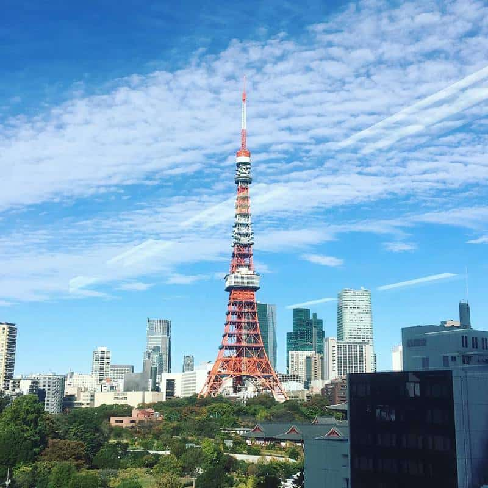
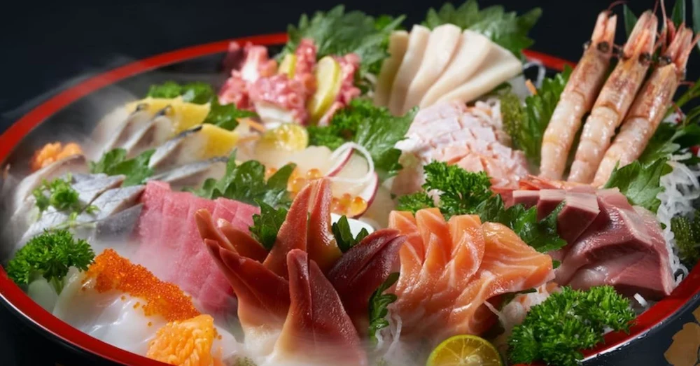
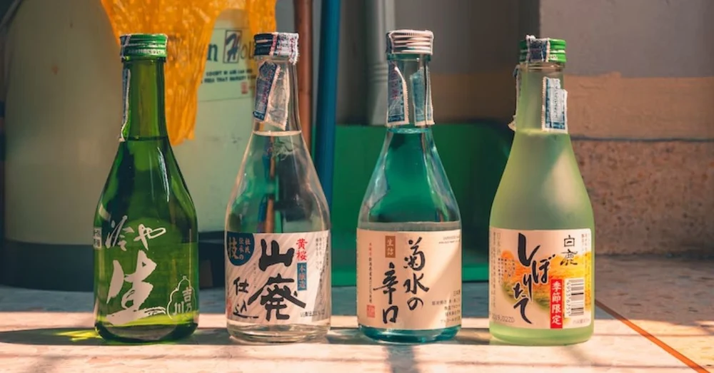

Chào mừng bạn đến với những điểm đến tuyệt vời nhất trong ngành du lịch của Nhật Bản-
Nhật Bản là một trong những cường quốc văn minh hiện đại và sở hữu công nghệ bậc nhất thế giới. Những năm gần đây Nhật Bản thu hút rất nhiều du khách đến thăm quan, du lịch bởi nét văn hóa truyền thống đa dạng cùng phong cảnh nên thơ hữu tình, tour du lịch Nhật Bản là một trong những tour vô cùng nổi bật được nhiều người lựa chọn
Núi Phú Sĩ
Địa điểm du lịch ở Nhật Bản đầu tiên phải nhắc đến là núi Phú Sĩ. Nổi tiếng là ngọn núi cao nhất Nhật Bản với độ cao 3.776 mét. Nó được bao quanh bởi năm hồ nước và quang cảnh đồng quê nguyên sơ. Núi Phú Sĩ quanh năm tuyết phủ trắng xóa là một trong những biểu tượng của đất nước mặt trời mọc.
Tháp Tokyo
Tháp Tokyo tọa lạc tại quận Minatoku và là một trong những địa điểm du lịch ở Nhật Bản nổi tiếng. Đây là tòa tháp vô tuyến cao thứ 2 của Nhật Bản, cao 333m sau tháp Tokyo Sky Tree và cao hơn tháp Eiffel 13m. Tháp Tokyo được xem như là biểu tượng của Nhật Bản và cũng là điểm đến du lịch nổi tiếng ở Nhật mà bạn không nên bỏ qua.
Sushi
Sushi - Món ăn nổi đình đám không chỉ tại Nhật Bản mà còn trên toàn thế giới. Với sự kết hợp độc đáo giữa cơm trộn giấm và các loại hải sản tươi sống như cá ngừ, hàu, bào ngư, cá hồi, tôm,... Sushi mang đến hương vị đậm đà, tinh tế và không thể cưỡng lại được.
Sashimi
Sashimi, món ăn được xem là tuyệt tác trong ẩm thực Nhật Bản, không chỉ đẹp mắt mà còn hấp dẫn với sự đa dạng của các loại hải sản tươi sống. Cá hồi, cá ngừ, cá thu, cá saba, cá nóc, mực, bạch tuộc và tôm biển được thái thành những lát mỏng và được bày trí trên đĩa.
Rượu Sake
Rượu Sake là một thức uống đặc biệt của người Nhật với ý nghĩa vượt xa hơn việc chỉ đơn giản là thỏa mãn nhu cầu thưởng thức. Nó là một biểu tượng của văn hóa và tôn giáo, gắn kết giữa con người với con người và con người với thần linh.